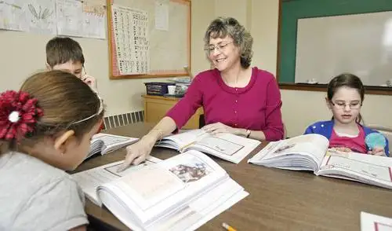

[Originally printed in The Forum newspaper Saturday, April 20; reprinted with permission.]
{kind=link}
Judaism on the prairie: Jews in Fargo-Moorhead adapt to unique challenges
By Roxane B. Salonen, The Forum
{kind=link}
At religious school as a child, Frances Weintraub was asked to draw her family tree. Finishing, she sat back and regarded the creation, noting the lopsided branches.
“Mine went one way on my dad’s side, and another way with question marks on my mom’s side,” Frances explained. “My mom didn’t know anything about her dad except his name.”
Sadly, the broken branches tell of the tragic consequences of war.
Frances’ mother, Elaine, was born in 1940 Poland, just months after Adolf Hitler’s German army invaded the country. Two years later, the situation had gotten so dire that her parents, Chana and Yitzchak, made a desperate decision.
“She was one of the ‘hidden children,’ ” Frances explained. “They took her to a Catholic family who lived on a farm and had no children.”
While Elaine, 2, was quietly being cared for by strangers, family members including her parents, grandparents and aunts were murdered. An uncle eventually found her and, when she was 10, brought her to the United States to live with a great-aunt.
“Think of what her parents sacrificed,” Frances said. “Can you imagine giving up your baby to save her?”
But life wasn’t easy for Elaine even after moving to America. Later, she poured herself into her children, raising them in the Jewish tradition and reminding Frances and her siblings how good they had it with warm meals and nice clothes.
“My mom is a Holocaust survivor, and when you grow up with that you have an even stronger sense of who you are, where you’ve come from,” Frances said. “And you don’t want the Jewish people to end, because if they do, Hitler would have won.”
Frances, a retired pediatrician, now brings honor to her family’s history by pouring energy into her kids – Rena, 7, Forrest, 10, and Isaac, 12 – teaching them the ways of being Jewish, as well as through instructing other children in Hebrew at Temple Beth El, Fargo.
 |
| Fran Weintraub teaches beginning Hebrew at Temple Beth El in Fargo. Weintraub’s mother survived the Holocaust, which has played a role in her commitment to Judaism. (Carrie Snyder / The Forum) |
{kind=link}
Since moving here last January from Madison, Wis., where the family was involved in a thriving Jewish community, Frances has been thrilled to be part of the local temple, which comprises a smaller community of about 40 families of Reform Jews – the most liberal of the three main Jewish branches.
With her children being the only Jewish students in their classes at school here, Frances said it’s especially important they have a good experience of Jewish life at the temple. To help make it so, she raised her hand immediately upon learning the temple’s annual Purim carnival was without an organizer and planned it herself.
Jewish in North Dakota
While at medical school at Southern Illinois University, Frances experienced many of the students from rural areas perceiving her being Jewish as “something to talk about.” She said she even once had to listen uncomfortably to an anti-Semitic joke.
But North Dakota has had none of that, she added. It’s more the logistical things that can complicate living life as a Jew on the prairie.
For example, food can be hard to access, especially for special seasons like Passover and Hanukkah, or the temple’s upcoming annual gourmet brunch, which typically serves around 700. She relies on online shopping and her mother, who ships food from Illinois. “If not for the Internet, she’d just have to send a bigger package,” Frances said, shrugging.
The family has found other ways of working around the inconvenience, too, like stopping in larger cities while on vacation to pick up bulk boxes of candles for Shabbat.
Abby Gold of Moorhead, a temple board member, grew up in Brookline, Mass., in an area speckled with Irish and Jewish residents. She said people here have been generally respectful of her being Jewish, though she admitted to occasional frustration.
For example, Christians have tried to convert her kids at school. “My son doesn’t want to be proselytized to, but he has been by his friends,” she said. “It’s really important to have school be a place where kids can feel safe, and not feel like they have to defend who they are.”
Her temple comrade, Wendy Gordon of Fargo, said she hasn’t experienced that, but did while growing up in a Jewish neighborhood in Atlanta, where her Baptist friends tried valiantly to “save” her from damnation.
“They’d say, ‘Because you’re Jewish, you’re going to hell.’ But we don’t even have that concept,” Wendy explained. “It was touching because I knew they really cared, but it wasn’t something I could understand not coming from their belief system.”
It can be hard for many non-Jews to understand Judaism, Wendy said, since it’s based primarily on what one does in this life, and is less dogmatic than some religions.
“Getting a straight answer to anything is hard in Judaism,” she said, because much is debated for years without firm conclusions. “And we don’t discuss the afterlife at all. There’s no real answer to that question. My sense of it has been that we just don’t know.”
As a point of clarification, Frances said that faith, while a big word in Christianity, isn’t emphasized so much in the Jewish tradition. “It’s really more that if you study things to help you become a good person, there will be peace on earth,” she said. “We’re trying to do good things and heal the world.”